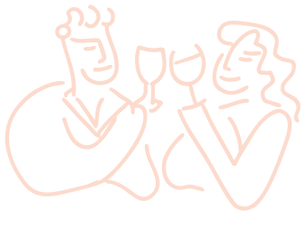

Sunnyside Vines
Some stories are best told through wine
We source exquisite wines from family-run vineyards across Europe, connecting their legacy to yours.


We source exquisite wines from family-run vineyards across Europe, connecting their legacy to yours.

We believe the most memorable wines come from small, family-run vineyards where heritage is honored and every bottle tells a story.